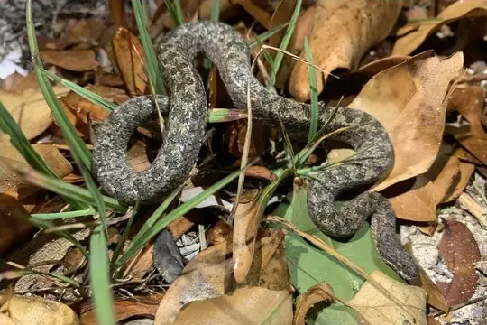

Snakes of Turks and Caicos Islands
3 snake species are recorded in the Turks and Caicos Islands in SnakeList: 0 venomous and 3 non-venomous, from 3 families.
- 3species
- 3non-venomous
- 3families
These totals count the snakes SnakeList records as living in the Turks and Caicos Islands. A species counts if it is recorded anywhere in the country, so not every snake lives in every region.
Species
Showing 3 species

Caicos TropeTropidophis greenwayi Flathead Worm SnakeAntillotyphlops platycephalus
Flathead Worm SnakeAntillotyphlops platycephalus Southern Bahamas BoaChilabothrus chrysogaster
Southern Bahamas BoaChilabothrus chrysogaster
No snakes in Turks and Caicos Islands match.
Turks and Caicos Islands’s snakes in numbers
- Families: Boidae 1, Tropidophiidae 1, Typhlopidae 1.
- 1 is recorded in no other country in SnakeList: Caicos Trope.
States and provinces
The states and provinces where SnakeList records snakes, with how many species each has. Each page has its families, venomous snakes, the species found only there, its cities and neighbours.
- North Caicos 1 species
- Providenciales and West Caicos 2 species
- South Caicos and East Caicos 1 species
No place matches that.